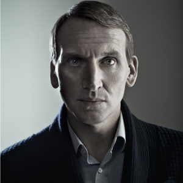

Portrayed by Christopher Eccleston
|  | Born 16 February 1964) is an English actor. He is best known for his role as the ninth incarnation of the Doctor in the British television series Doctor Who. In addition to his extensive television work, he has appeared on stage and in films such as Let Him Have It, Shallow Grave, Gone in 60 Seconds, The Others, Jude, and G.I. Joe: The Rise of Cobra. He has been cast as Malekith the Accursed in the upcoming Marvel superhero film Thor: The Dark World. |